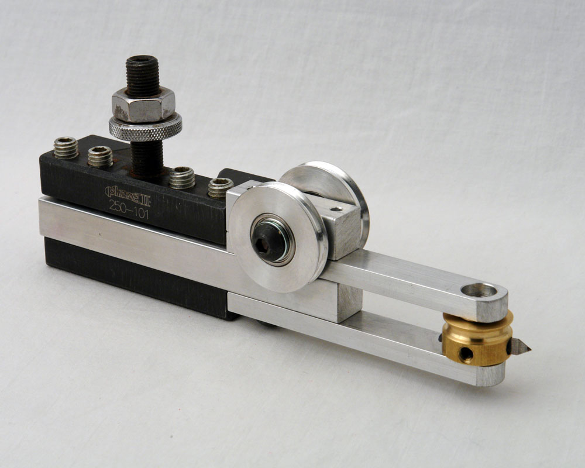
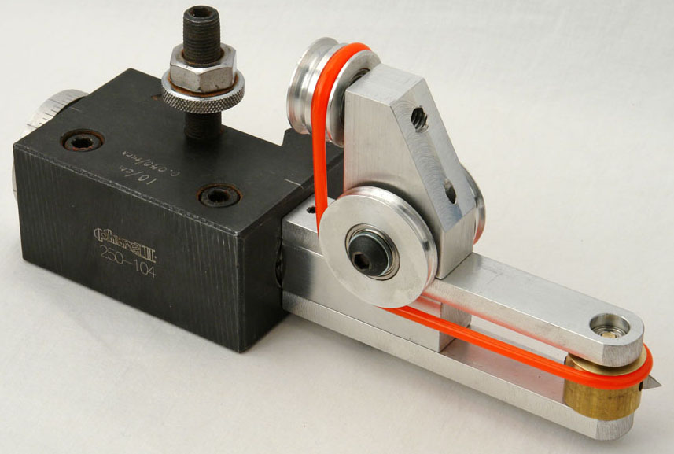
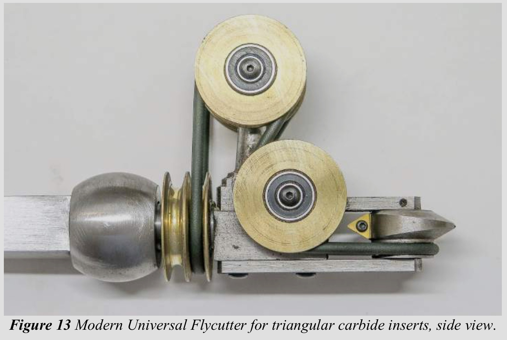

Horizontal Cutting Frame Image courtesy Bill Ooms
Universal Cutting Frame Image courtesy Bill Ooms
Small Universal Cutting Frame Image courtesy Fred Armbruster
The cutting frame is similar to a circular saw or a router in the way it works: It has a spinning cutter which is engaged with the wood to cut into it.
For use, it is usually held in a quick change tool post (QCTP), and the QCTP bolted to an cross slide (much like a metal lathe's tooling is held in the compound rest).
There are many varieties of cutting frames, but the first 4 listed below are the most used today:
horizontal cutting frames (HCF) - where the cutting head spins horizontally along a vertical axis. This is the one which is shown in the upper picture on the right.
vertical cutting frames (VCF) - where the cutting head spins vertically along a horizontal axis.
universal cutting frames (UCF) - where the cutting head can be rotated to the left or right, making the cutting head spin along an axis determined by the ornamental turner. This is the one which is shown in the lower picture on the right.
In the pictures of the horizontal and universal cutting frames to the right, the brass part at the end of the arms is the cutter head. The pointed part in the cutter head is the cutter.
internal cutting frames (ICF) - which are basically drill spindles that hold a cutter perpendicular to the axis of rotation. These are particularly useful for cutting the inside of cylinders and egg-shaped objects.
rose cutting frames - really interesting fly cutter where the cutter's holder rides along a rosette for it's movement (whilst also spinning).
Key Note: Cutting Frames are where the quality of ornamental cutting comes to life. If there is vibration in the cutting frame it will be transmitted to the cuts, and the quality of the work will be poor.
When you are using the rose engine lathe, listen for noise in the cutting frame. The cutting frame should have a whir like a finely tuned machine, and the noise level should be low. If there is vibration, the noise level will be higher; sometimes much higher and the tone of the noise will be higher. It won't sound or run like a finely tuned machine.
Just getting started? The cutting frame is one of your first purchases.
Carbide insert cutters - these are triangular pieces of carbide held by a screw in the brass cutter head. They are similiar to ones used on a metal lathe. An example is shown in the picture to the right.
Advantages of using carbide cutters are :
There are two on the wheel, making the cutting action happen twice as fast. (Brad Davis made one with three cutters.)
The carbide cutters stay sharper longer.
The carbide cutters can be easily replaced when they become dull.
The insert recommended is from Circle Machine Co., part number is 2828732 (the industry number for them is TDAB-505-C25). It is grade C25 carbide, and has a 0.007" corner radius. This radius is recommended over those cutters with 0.002" radii (or smaller).
A larger corner radius "blurs" the definition, and that may be what you want as an artist. However, a corner radius smaller than 0.007" will not necessarily give better definition. Those will amplify each and every striation in your cuts, making them look like someone dragged a rake over your workpiece.
Fly cutters - Advantages of using fly cutters include:
The fly cutters can be ground to different shapes than simply a triangular bit. This is of particular note as I have found that rounding over the end (vs. taking it to a point) makes the results better for softer woods (e.g., cherry) and woods with wider grain patters (e.g., ash).
The fly cutters can be resharpened by the home ornamental turner. Sharpening instructions are on the are on the Sharpening Handbook web site:
Sharpened / Shaped Rods - The primary advantage of using this type of fly cutters is that the holder of the cutter can be easily made on a bench top metal lathe; no milling machine is needed.
Shaped Flat Cutters - Traditionally, fly cutters were flat pieces of metal with various shapes, and there are some ornamental turners who use these still today. Many of these are used with vertical cutting frames, but they work on other cutting frames : It just really mattes what the turner is trying to achieve.
Some examples are shown to the right.
The smaller cutters shown in that picture would be used in internal, eccentric, elliptical, and epicycloidal cutting frames, whilst the larger would be used in vertical, horizontal, and universal cutting frames.
At the 2018 Ornamental Turners International Symposium, Steve White introduced the idea of using slitting saws in a cutting frame. These are the same saws that get used in milling machines for cutting slits in an object.
Steve's use of this was to cut a slit of a certain size (say, 1/16") along the Z axis in an object at various locations (e.g., every 90° around the circumference), and then insert a piece of contrasting wood into the slit. This is different from segments glued together with thin contrasting woods. In this case, the slits did not traverse the entire length of the piece, only a part of it. (I realize a picture would be great, and I'm working on getting one.) It is a great way to produce a uniformity and beauty that couldn't be easily done via other methods.
The cutting head is traditionally rotated using an overhead drive, but direct drive approaches are also used.
Cutting frames can be purchased from a number of vendors (see also, Buying a Rose Engine Lathe), or you can make your own. Directions for making a cutting frame are nicely described by Bill Ooms. There are additional notes about this at making a Cutting Frame.
If you make your own, you will need belting for it (that is the orange stuff in the universal cutting frame picture, above). I used the same cable belting for this as I used on my overhead drive.
Examples of this device in use
This video below shows a horizontal cutting frame in use
This is a YouTube video showing a fly cutter in use
Fly Cutter for a Rose Engine Ornamental Lathe
And this YouTube video shows how I make and sharpen a rod-based fly cutter
Fly Cutter for a Rose Engine Ornamental Lathe
Eddie Bell gave a presentation about variations on the Gorst du Plessis finials at the 2018 Ornamental Turners International Symposium. This is a nice presentation about the effect fly cutter shapes can have on the object shape.
Usage Notes
Aligning the Cutter
Cutter Alignment on an MDF Rose Engine
The cutter needs to be aligned on the centerline of the spindle as shown in the picture to the right. This can be achieved by moving the cutting frame (or drill spindle) up or down in the quick-change tool post.
Cutter Aligned too High
Cutter Aligned too Low
Cutter Aligned Properly
You can test the cutter's alignment on the end of a piece and see how it matches up with the images of cuts to the left.
When the cutter is aligned too high in the quick-change tool post, it will create a pattern as shown in the first row of pictures to the left.
When the cutter is aligned too low in the quick-change tool post, it will create a pattern as shown in the second row of pictures.
When the cutter is aligned properly, it will create a pattern as shown in the third row.
This is where the indexing function in the Control System for Multiple Stepper Motors comes in quite handy. Indexing the cuts 90° after each cut makes the alignment verification easy.
One recommendation is to affix a scrap of wood to the end of the object and make cuts into that. (It can be held there using double-sided tape.)
Artistic note: Sometimes you may want the cutter to be below or above the axis of the spindle to achieve your desired artistic effect. In that case, this step is even more important, though your target position for the cutter will be different.
Rotating the Cutter
Universal Cutting Frame
The picture to the right shows a typical universal cutting frame from the side and the end. This UCF has a fly cutter.
The dashed lines show the two centers of rotation.
The blue line represents the rotation axis for the universal cutting frame.
The red line represents the rotation axis for the cutter in the universal cutting frame.
The green line represents the rotation axis for the object being worked on.
Rotating the
Universal Cutting Frame
When we say that the cutter is aligned with the object, the cutter's axis of rotation (the red line) is aligned with the spindle's axis of rotation (the green line). This UCF's manufacture does not have the axis for the cutter and the axis for the UCF aligned, so when the UCF is rotated, there will be a change in where the cutter cuts the object.
The picture to the left shows the cutter rotated 45°. As shown, the horizontal centerline for the cutter is now closer to the centerline for the UCF. If the cutter is not raised in the tool holder, then the cutter will be cutting below the axis of rotation on the piece being cut.
Cutter Aligned above spindle's axis of rotation
Cutter Aligned on spindle's axis of rotation
This means there is some distance between the axis of rotation for the cutter vs. the axis of rotation for the UCF. This distance is indicated by the two arrows. The screw on the tool holder in the quick change tool post is used to adjust this vertical alignment.
If the cutter's vertical alignment is not adjusted, the resulting cuts will be different than possibly expected. The picture to the right shows the effect of having the cutter aligned above and on the spindle's axis of rotation.
Cutter Rotational Speed
When I was getting started with ornamental turning, I asked how fast the cutter should be spun. The gentleman responded, "I run it as fast as I can without burning the wood."
It is common to use a variable speed motor like the midi lathe conversion kit from Penn State Industries for the overhead drive. To drive the belt, it is also common to use a multi-step pulley, with the pulley sizes at 4", 3", and 2" diameter. Based on that, the 4" pulley is used most often, and the 2" one almost never.
General ideas are:
low density woods (like walnut) - run the cutter at maximum speed
high density woods like ironwood - run the cutter at medium speed
end grain on woods prone to burning (like maple) - run the cutter at slower speed
Additional notes regarding materials used in ornamental turning are captured in the materials section of this site.
Notes on making one
Cutting Frames are not hard to make if you have a metal lathe (or access to one). A milling machine is also useful, but not required.
Bill Ooms provided great directions on making cutting frames, especially the UCF. I have used these plans, and additional notes from my own experiences making an HCF are on this web page.
Horizontal Cutting
Vertical Cutting
Right Angle Cutting
Ed French published directions for making a number of cutting frame designs on his GitHub page (pictures of one design are below to the right). The advantages to what Ed has published is that his designs are published as both PDF images and Fusion 360 models.
One of Ed's designs includes the ability to handle small milling bits which can be quite useful for operations like cutting slots on the inside of a cylinder (e.g., a cricket box). This is the right angle cutting frame.
One common feature in the designs shown to the right is the ability to adjust the tension on belt that drives the motion of the cutting head. Ed achieved this by allowing for moving the idler pulley up or down as needed.
Disclaimer : eMail comments to me at OTBookOfKnowledge @ Gmail.com. The process of woodturning involves the use of tools, machinery and materials which could cause injury or be a health hazard unless proper precautions are taken, including the wearing of appropriate protective equipment.